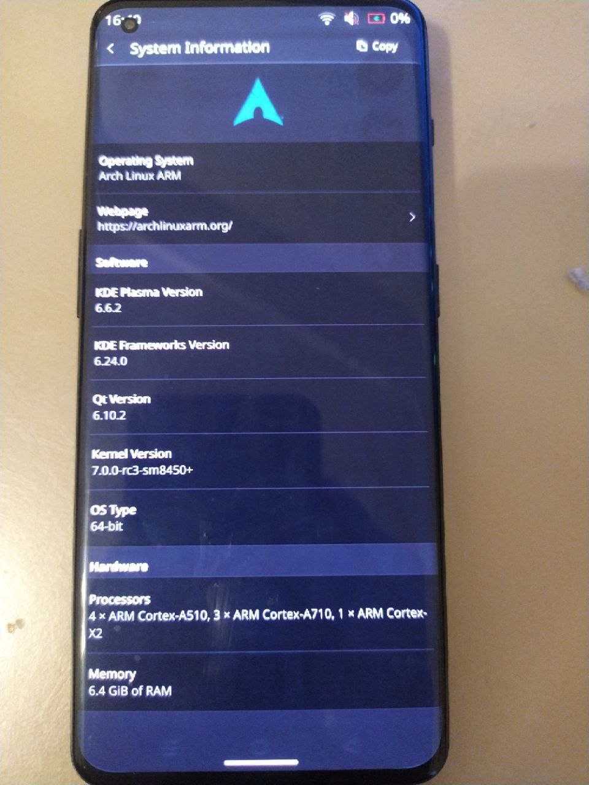

OnePlus 10 Pro (oneplus-negroni)
| This device has been tested with postmarketOS, but its device package has not yet been added to the postmarketOS repositories. This means that it cannot be selected in pmbootstrap. |
|
 Oneplus 10 Pro run Arch Linux ARM. | |
| Manufacturer | OnePlus |
|---|---|
| Name | 10 Pro |
| Codename | oneplus-negroni |
| Released | 2022 |
| Type | handset |
| Hardware | |
| Chipset | Qualcomm Snapdragon 8 Gen 1 (SM8450) |
| CPU |
Octa-core (1x 3.00 GHz Cortex-X2 3x 2.50 GHz Cortex-A710 4x 1.80 GHz Cortex-A510) |
| GPU | Adreno 730 |
| Display | 3216X1440 120Hz AMOLED |
| Storage | 128/256/512 GiB |
| Memory | 8/12 GiB |
| Architecture | aarch64 |
| Software | |
Original software
The software and version the device was shipped with.
|
Android 12 on Linux 5.10 |
Extended version
The most recent supported version from the manufacturer.
|
Android |
| postmarketOS | |
| Category | testing |
Mainline
Instead of a Linux kernel fork, it is possible to run (Close to) Mainline.
|
yes |
pmOS kernel
The kernel version that runs on the device's port.
|
7.0 |
{kind=link}
Flashing
Whether it is possible to flash the device with
pmbootstrap flasher. |
Works
|
|---|---|
USB Networking
After connecting the device with USB to your PC, you can connect to it via telnet (initramfs) or SSH (booted system).
|
Works
|
Internal storage
eMMC, SD cards, UFS...
|
Works
|
Battery
Whether charging and battery level reporting work.
|
Works
|
Screen
Whether the display works; ideally with sleep mode and brightness control.
|
Works
|
Touchscreen |
Works
|
| Multimedia | |
3D Acceleration |
Works
|
Audio
Audio playback, microphone, headset and buttons.
|
Broken
|
Camera |
Broken
|
Camera Flash |
Works
|
| Connectivity | |
WiFi |
Works
|
Bluetooth |
Works
|
GPS |
Broken
|
NFC
Near Field Communication
|
Untested
|
| Modem | |
Calls |
Broken
|
SMS |
Broken
|
Mobile data |
Broken
|
| Miscellaneous | |
FDE
Full disk encryption and unlocking with unl0kr.
|
Untested
|
USB OTG
USB On-The-Go or USB-C Role switching.
|
Partial
|
HDMI/DP
Video and audio output with HDMI or DisplayPort.
|
Works
|
| Sensors | |
Accelerometer
Handles automatic screen rotation in many interfaces.
|
Broken
|
Magnetometer
Sensor to measure the Earth's magnetism
|
Broken
|
Ambient Light
Measures the light level; used for automatic screen dimming in many interfaces.
|
Broken
|
Proximity |
Broken
|
Hall Effect
Measures magnetic fields; usually used as a flip cover sensor
|
Broken
|
Haptics |
Broken
|
Barometer
Sensor to measure air pressure
|
Broken
|
Contributors
Xlie
Users owning this device
- Fluffydacat (Notes: 128GB mainline Chinese variant)
- Xlie (Notes: OP10P, 128gb, mainline)
How to enter flash mode
1. Enable Developer Options: Settings -> About Phone -> Click on "Build number" 9 times 2. OEM unlocking: System -> Developer options -> Enable "OEM unlocking" 3. Unlock the bootloader: adb reboot bootloader -> fastboot logo should appear 4. Finally: open terminal -> fastboot flashing unlock
Installation
1. downloading kernel source
git clone https://github.com/Xlie-Electronic-Customs/linux.git
cd linux
2. building kernel
make O=output ARCH=arm64 CROSS_COMPILE=aarch64-linux-gnu- -j$(nproc) defconfig
make O=output ARCH=arm64 CROSS_COMPILE=aarch64-linux-gnu- -j$(nproc) sm8450.config
make O=output ARCH=arm64 CROSS_COMPILE=aarch64-linux-gnu- -j$(nproc)
make O=output ARCH=arm64 CROSS_COMPILE=aarch64-linux-gnu- INSTALL_MOD_PATH=out-modules modules_install
cd ..
3. building rootfs image
curl -O 'https://ca.us.mirror.archlinuxarm.org/os/ArchLinuxARM-aarch64-latest.tar.gz'
# create rootfs
truncate -s 6G root.img
mkfs.ext4 root.img -L root
# setup Arch Linux ARM root environment
mkdir alarm
sudo tar -xzvf ArchLinuxARM-aarch64-latest.tar.gz -C alarm
sudo pacman -Rc linux-aarch64 -r alarm
sudo cp linux/output/arch/arm64/boot/Image.gz alarm/boot/
sudo cp -r linux/output/out-modules/lib/modules/ alarm/usr/lib/
sudo rm alarm/etc/resolv.conf
sudo rm alarm/etc/mtab
sudo cp /etc/resolv.conf alarm/etc/resolv.conf
sudo cp /etc/mtab alarm/etc/mtab
sudo cp /etc/vconsole.conf alarm/etc/
# mount root.img and init prepare Arch Linux ARM environment
sudo mount root.img alarm/mnt
sudo chroot alarm
mount -t proc proc /proc
mount -t sysfs sysfs /sys
mount -t devtmpfs devtmpfs /dev
pacman-key --init
pacman-key --populate archlinuxarm
sed -i -E 's/^#?(ParallelDownloads *= *).*/\150/; s/^#?(DisableSandboxFilesystem)/\1/; s/^#?(DisableSandboxSyscalls)/\1/' /etc/pacman.conf
echo -e "\n[xec]\nSigLevel = Optional TrustAll\nServer = https://xlie-electronic-customs.github.io/xec-arch-repo/" | tee -a /etc/pacman.conf
pacman -Qq | grep linux-firmware | pacman -Rns - --noconfirm
pacman -Syu archinstall
# install packages in to root.img
pacstrap -i /mnt pacman archlinuxarm-keyring systemd-sysvcompat networkmanager msm-firmware-loader plasma-mobile bluedevil linux-firmware-oplus-negroni
systemctl --root=/mnt enable plasma-mobile
systemctl --root=/mnt enable NetworkManager
systemctl --root=/mnt enable bluetooth
systemctl --root=/mnt enable systemd-timesyncd
systemctl --root=/mnt enable msm-firmware-loader
systemctl --root=/mnt enable msm-firmware-loader-unpack
useradd -R /mnt <your username> -m -p <user password>
passwd -R /mnt root
<root password>
# build initramfs
sed -i -E 's/^MODULES=\(([^)]*)\)/MODULES=(dispcc-sm8450 phy-qcom-qmp-ufs)/; s/\<(microcode|autodetect|kms)\>//g; s/ +/ /g' /etc/mkinitcpio.conf
mkinitcpio -k /boot/Image.gz -g /boot/initramfs-linux.img
exit
# put kernel modules in rootfs
sudo cp -r linux/output/out-modules/lib/modules/ alarm/mnt/lib/
# unmount root.img
sudo umount alarm/mnt
# get initramfs
sudo cp alarm/boot/initramfs-linux.img .
sudo chmod +rw initramfs-linux.img
3. building vbmeta, boot, vendor_boot and root images
# build vbmeta with verification disable flag
avbtool make_vbmeta_image --output vbmeta.img --flags 2
# build vendor_boot with mainline DTB
mkbootimg --header_version 4 --vendor_boot vendor_boot.img --dtb linux/output/arch/arm64/boot/dts/qcom/sm8450-oneplus-negroni.dtb --pagesize 4096
# build boot with kernel, ramdisk and cmdline
mkbootimg --kernel linux/output/arch/arm64/boot/Image.gz --ramdisk initramfs-linux.img --header_version 4 --pagesize 4096 --os_version 12.0.0 --os_patch_level 2026-03-00 --cmdline "console=tty0 root=/dev/sda14 rootwait rw bootconfig" -o boot.img
# build recovery with ramdisk (without mainline recovery you can catch bootloop)
mkbootimg --ramdisk initramfs-linux.img --header_version 4 --pagesize 4096 --os_version 12.0.0 --os_patch_level 2026-03-00 -o recovery.img
# convert root into android sparse image
img2simg root.img sparse_root.img
4. flashing
fastboot erase dtbo
fastboot flash vbmeta vbmeta.img
fastboot flash vbmeta_vendor vbmeta.img
fastboot flash vbmeta_system vbmeta.img
fastboot flash vendor_boot vendor_boot.img
fastboot flash recovery recovery.img
fastboot flash boot boot.img
fastboot erase userdata
fastboot flash userdata sparse_root.img
fastboot reboot
Additional info
Qbootctl
WARNING: qbootctl can BRICK your device while trying to switch slots with qbootctl -s <slot> command, requiring a boot to EDL (which can ONLY be done by the oplus pay repair tool): https://github.com/linux-msm/qbootctl/issues/4
|
Android Verified Boot (vbmeta)
This device is using Android Verified Boot (AVB). To boot mainline kernel you may need to flash vbmeta partition with vbmeta.img with verification disabled flag.
Partitions vbmeta_vendor and vbmeta_system can be erased or flashed with vbmeta.img with verification disabled flag.
Boot mainline directly from ABL
Android 12 bootloader read DTB only from vendor_boot partition. The boot partition is used for kernel, ramdisk and cmdline. recovery partition just for ramdisk, it use kernel and cmdline from boot partition.
DTBO Partition
board-id exist in mainline DTB so DTBO partition can be erased.
Display
Brightness switch works well. Frequency switching between 60hz, 90hz and 120hz works well too, but resolution swithing between FHD (1080x2412) and WQHD (1440x3216) not. This resolution modes have different slice width and height but mainline drm driver support only one slice width/heigy for panel. In the feauture will be added multiple slice width/height support. Currently in panel driver available FHD mode but you can manually set slice width 720 and slice height 24 and it will set WQHD mode.
Battery
Show percentage and charging when ADSP remoteproc run. Power Delivery 30W works well! Oplus SuperVOOC hasn`t been tested but it should work too
USB OTG
The USB C UCSI switching beetwen host and device mode work when ADSP remoteproc up. The OTG vbus power in host mode is broken so without external power host mode don`t work. Device mode works well. Both of this modes works well on super-speed (5 Gbit/s)!
DP Alt Mode
DP Alt Mode works when ADSP remoteproc run! Currently USB OTG vbus is don`t work so you need to use hub with external power supply. Hot plug is work but recommendation is disconnect HDMI/DP before disconnecting USB hub. In GDM and GNOME after disconnecting external monitor wait 6 seconds before connect again.
{kind=link}
{kind=link}
{kind=link}
WI-FI
Wifi still works well with custom firmware build, 2.4G and 5G works well with high speed.
WI-FI firmware build guide
WI-FI firmware can be build from bdwlang file to board-2.bin with qca-swiss-army-knife utility
This is board-2.json:
[
{
"board": [
{
"data": "bdwlang.elf",
"names": ["bus=pci,vendor=17cb,device=1103,subsystem-vendor=17cb,subsystem-device=0108,qmi-chip-id=18,qmi-board-id=255"]
}
]
}
]
Then get m3.bin, amss20.bin, regdb.bin from the modem_a/b partition (NON-HLOS.bin firmware file). Get bdwlang.elf file from odm.img firmware file
simg2img odm.img odm mkdir o mount odm o cp odm/etc/wifi/bdwlang.* .
Here is description of bdwlang files which get from cnss driver source code
bdwlang.b0a North America (T-Mobile version) bdwlang.b0e EU bdwlang.b0c China, India bdwlang.elf (seems looks like Global)
Put bdwlang.elf in the same directory with board-2.json.
Build:
python qca-swiss-army-knife/tools/scripts/ath11k/ath11k-bdencoder -c "board-2.json" -o board-2.bin
then put files
board-2.bin -> /lib/firmware/ath11k/WCN6855/hw2.1/ m3.bin -> /lib/firmware/ath11k/WCN6855/hw2.1/ amss20.bin -> /lib/firmware/ath11k/WCN6855/hw2.1/amss.bin regdb.bin -> /lib/firmware/ath11k/WCN6855/hw2.1/
If you don`t want to build wifi firmware just copy bdwlang.elf as board.bin in firmware directory
bdwlang.elf -> /lib/firmware/ath11k/WCN6855/hw2.1/board.bin
With linux-firmware-atheros package WI-FI works so bad, 2.4G works with low speed and 5G have very low signal.
NFC
NFC support was added but it hasn`t been tested. rfkill command shows that nfc is hardware and software unblocked.
Modem
IPA v5.1 driver support now in in progress. Modem requires rmtfs.conf because it need to load some partitions which is not exist in rmtfs code
Alert slider
Work partially, while changing position it call change position input event but slider position event don't work.
See also
- Mainline linux fork: XEC Mainline Project